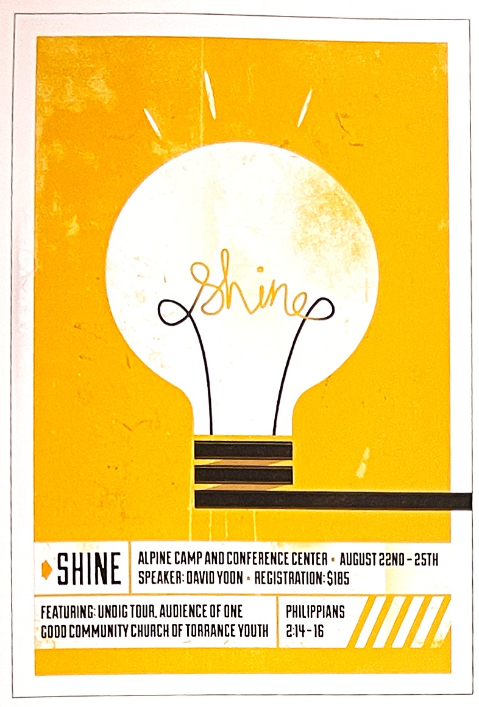
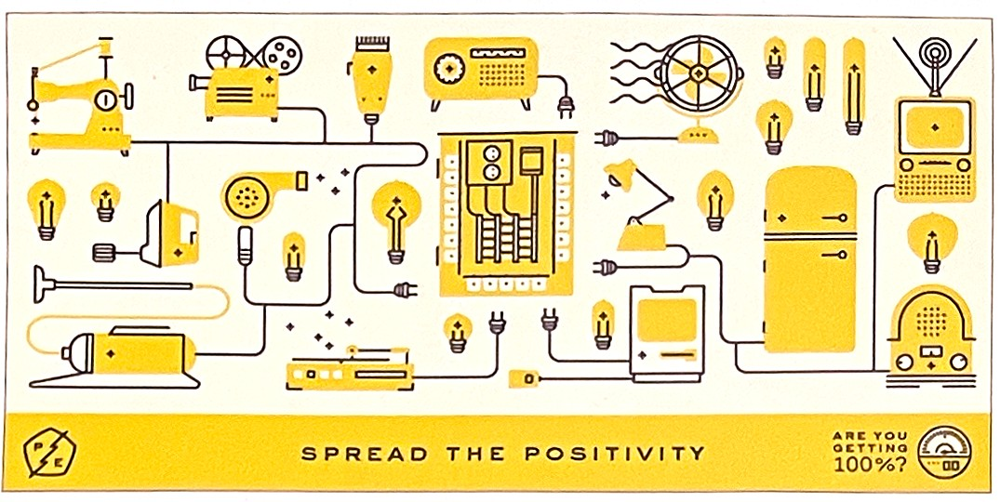
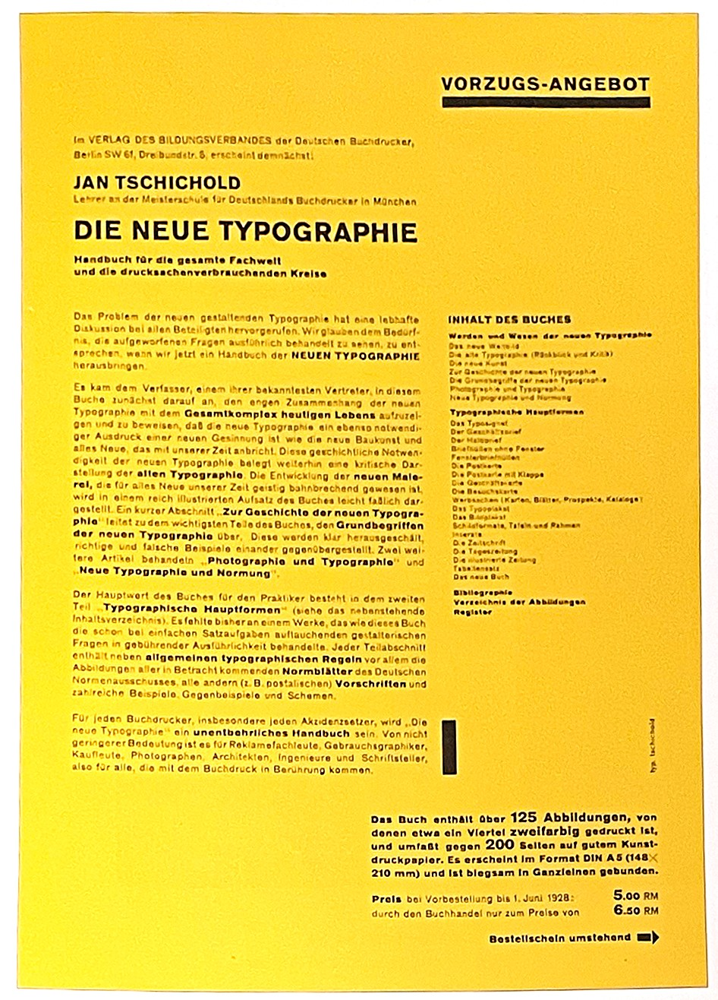
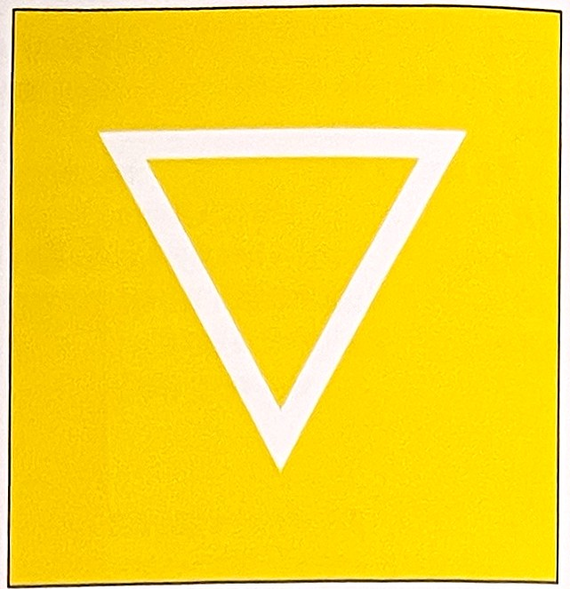
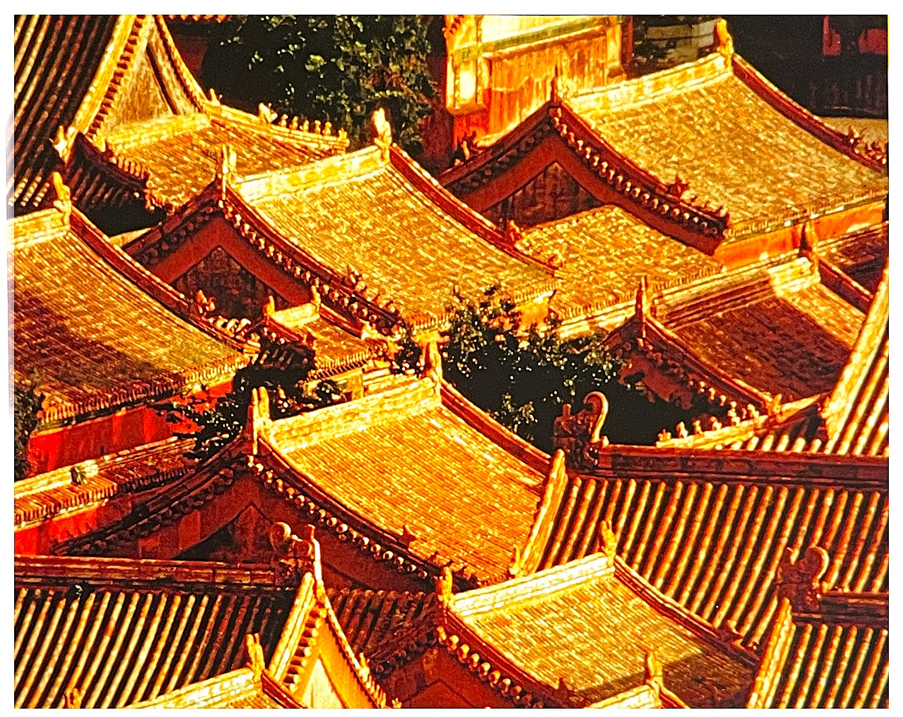
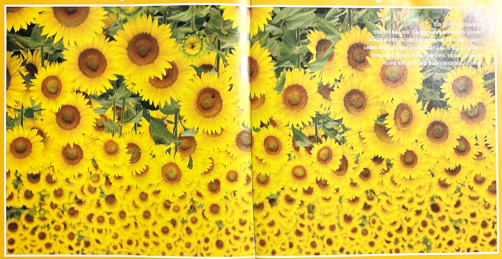
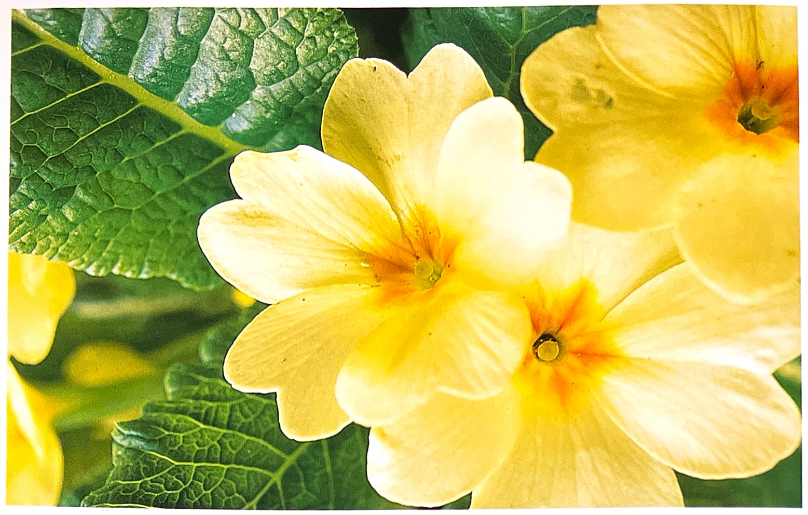

자극적이면서도 사람을 흥분하게 만드는 역할을 하며, 강렬한 색상으로 식욕을 느끼게 하며, 맛잇고 달콤함을 연상시키며 빨간색과 더불어 음식 관련 디자인에 어울린다.
1. 색의 성격오랜 시간 만들어진 색상이 가지고 있는 성격 : 외향, 정열, 적극, 단순, 냉정하지 못함, 감상적 2. 색의 영향사람이 인지했을 때 느낌 : 생명력, 따듯함, 위험, 불안, 혁명, 흥분, 정열, 용기, 모험심, 주목성 3. 색의 처방색상을 의도적으로 활용할 수 있는 방법 : 빈혈 또는 무활력에 좋음, 강한 자극제, 몸의 지구럭 회복, 감수성 자극
아이디어를 상징하는 전구에 노란색이 더해지면서 보다 활동적으로 보이고 주제를 극대화하여 표현할 수 있습니다.
재미있고 역동성이 느껴지는 노란색과 일러스트가 주는 친숙함으로 인해 독자가 부담없이 정보를 받나 들일 수 있습니다.
문자와 그리드를 활용한 페이지 디자인-얀 차홀드 노란색과 검은색 배색이 문자를 명쾌하게 보이게 합니다.
노란색의 상징[4]긍정적 감정과 상징: 햇빛, 따뜻함, 재미, 행복, 우정, 지능, 사랑, 부활절, 전기, 희망, 긍정, 상상, 호기심 부정적 감정과 상징: 경고, 조심, 더딘, 겁 연상되는 자연/자연물: 해, 여름, 레몬, 가을 정치.종교적 상징: 자유진보주의
노란색의 심볼역삼각형[6]
노란색(Yellow)경험에 따르면 노랑은 절대적으로 따뜻하고 포근한 인상을 지녔다. 이런 노랑을 바라보면 눈이 즐거워지면서 가슴은 넓어진다. 기분도 좋아져 따스함이 직접 우리를 비춘다. 괴테Johann Wolfgang von Goethe의 '색채론'에서
노란색은 스펙트럼의 그 어떤 색보다도 돋보인다. 이것은 우리 눈의 감도가 최상일 때 인식하게 되는 빛의 파장이 노란색이기 때문이다. 옅은 노랑이 그에 비해 눈의 감도가 떨어지는 옅은 파랑보다 밝아 보이는 것도 이 때문이다. 이렇듯 색을 감지하는 민감도로 인해 파란색보다 노란색 계열을 훨씬 더 명확히 구분할 수 있다.
영어에서 노랑을 뜻하는 옐로우yellow는 황달이나 겁과 관련되어 미국 속어에서 겁쟁이는 노랑으로 표현되기도 한다. 미국 등의 국가에서 택시는 일반덕으로 가장 쉽게 식별할 수 있는 노랑을 많이 사용하는데 이것은 택시사업가 헤르츠가 원거리에서 가장 쉽게 인식될 수 있는 색이 노랑이라는 시카고 대학의 연구에 근거하여 회사 택시를 노란색으로 하기 시작한 것에서 비롯된다.[4]
문화적 의미로 사용된 노랑은 기독교 휴일인 부활절에서 볼 수 있다. 봄에 피는 노란색과 라멘더색의 꽃인 크로커스와 연관되어 부활절은 노란색과 라벤더 색으로 상징된다. 고대 마야 문명에서 노란색은 태양의 색으로 남향을 나타낸다. 중국의 인종들 중 황족Manchus은 첫 번째 왕족인 황제Yellow Emperor, 黃帝로 그 시대 중국 왕실가의 일원들은 황색의 건물과 의상을 사용할 수 있는 유일한 계급이었다.[4]
황제의 의복[1]세계에서 가장 오래된 문명을 발전시켜 온 나라 중 하나인 중국은 노란색에 온전히 몰두해 온 역사를 보유하고 있다. 그 기원은 중국 최초의 시조로 알려진 신화적 인물 '노란색 황제The Yellow Emperor of Huangdi'에게서 찾을 수 있다. 노란색 황제의 치세는 기원전 26세기에 시작되었으며 그의 발명과 리더십으로 인해 오늘날의 중국문명이 자리 잡은 것으로 알려졌다.
17세기 당나라 때부터20세기 청나라에 이르기까지 황제외에는 밝은 노란색 의복을 입지 못하도록 금지하는 법령이 적용되었다. 여타 노란색 계열은 황제의 아들들을 위해 사용되었다. 황제는 의복부터 벽, 지붕까지 말 그대로 노란색으로 둘러싸여 있었다.
중국 자금성의 지붕은 노란색의 향연을 펼친다.
중국인들이 노란색을 귀빈 전용으로 사용했다면 다른 문화에서는 이 색상을 훨씬 덜 중요한 것으로 간주했다. 태양 빛갈은 오히려 놀랍도록 많은 불길한 역사적인 사건들을 상징했다. 수세기 동안 이슬람교도들은 이교도로 간주되는 '다른 이'들을 노란색 기표로 표시해 왔다. 이러한 전통은 바그다드의 유대교도들과 기독교인들이 노란색 배지를 착용하던 9세기로 거슬러 올라간다. 이 관습은 세계의 다른 지역에서도 그대로 채택되었다. 13세기 잉글랜드의 에드워드 1세는 모든 유대인들이 노란색 펠트 천을 입도록 했으며, 16세기 인도가 회교도 통치하에 있을 때 인도의 무굴 황제 악바르는 힌두교 신자들에게 노란색 완장을 차도록 했다. 1930년대는 악명 높은 나치들이 유대인들을 식별하기 위해 다윗의 노랑별로 알려진 베지나 완장을 차도록 시킨 일은 이미 잘 알려져 있다. 오늘날에조차 탈레반들은 아프가니스탄에서 힌두교 신자들을 표시하기 위해 노란색 완장을 사용한다.
해바라기는 흔히 남프랑스 지역을 연상시키지만 실제 원산지는 북아메리카 지역이다. 지금은 애리조나 주와 뉴메시코 주에 거주하는 아메리카 인디언들은 기원전 3천년경부터 이 위풍당당한 식물을 재배하기 시작했다. 영양가 높은 해바라기 씨 28.5그램은 160칼로리에 해당하며, 해바라기 오일은 화장품에서부터 디젤 엔진, 프라이팬에 이르기까지 전세계적으로 사용되어 왔다.
노란색의 힘[3]루돌프 슈타이너Rudolf Steiner는 '노랑은 스스로 빛을 낸다'고 말했다. 말러Maler는 노랑은 다뜻함을 내뿜지만 눈에 잘 띄며 밝고 부드럽게 유혹하고, 다른색에 비해 강하게 퍼져나가는 속성이 있다고 밝혔다.
노랑은 하양처럼 밝아지려는 경향이 있다. 노랑의 세계에 어두운 노랑은 존대하지 않는다. 노랑으로 꽉 채운 원을 보면 중앙에서부터 빛이 난다는 사실을 알 수 있다. 이는 거의 모든 사람들 눈에 잘 띈다. 노랑은 사람을 조용하게 만들기도 하고 자극하기도 한다. 건방지고 뻔뻔한 기분을 나타내는 특징도 보인다. 밝은 톤의 노랑은 감당하기 힘들 정도로 눈과 기분을 자극한다. 시끄럽게 떠드는 트럼펫이나 엄청난 크기의 팡파르 소리에 비유된다.
바실리 칸딘스키Wassily Kandinsky
빛나는 태양과 비교할 수 있는 것이 과연 존재할까? 노랑은 가장 밝고 빛나는 색에 속한다. 어린이들은 태양을 그릴 때 대부분 노랑 크레용을 꺼내든다. 하지만 어른이 보는 태양은 다르다. 노란색과 큰 연관이 없어 보이고 단지 눈부신 빛일 뿐이다.
노랑은 태양이 아니다. 그러나 우리가 태양에 대해 얘기할 땐 노랑을 종종 떠올린다. '따듯함'을 연상시키기 때문이다.
사실 빛은 하얀색이다. 하얀색은 차가움을 느끼게 한다. 그러나 모든 것들은 밝고 뚜렷하게 비춰주는 태양을 보면 마음이 포근해진다. 여기엔 따뜻한 느낌의 노란 광택이 어울릴 수밖에 없다.
북방계 민족들의 종교를 보면 남쪽의 따뜻한 태양을 느끼고자 하는 갈망이 엿보인다. 이들은 횃불 축제, 태양륜(太陽輪), 태양을 새겨 놓은 석기 등을 만들어 이를 표현했다.
노란색의 심리학[2]다른 색상에서와 마찬가지로 노랑은 양면성을 가진다. 희망에 벅차 있는 사람은 노랑을 좋은 느낌으로 받아들인다. 그러나 좌절에 빠져 있는 이는 노랑을 불안해 하며 멀리한다.[3]
독일의 옛말에 '질투의 노랑'이라는 어구가 있다. 실제 차가운 이미지의 레몬색 노랑은 불쾌한, 악의가 있는, 인공적인, 위험한 혹은 아픈 등의 수식어와 어울린다. 그러나 순수한 노랑에서는 태양, 낮, 따듯한, 밝은, 활동적인, 자유로운, 아주 가벼운, 팡파레의 울림, 강한, 재미있는, 화려한, 호기심, 주의, 신경과민과 같은 말을 떠올릴 수 있다.[3]
노랑과 검정의 배색은 주의를 끈다. 확실한 경고표시로서 그렇다. 말벌이나 벌집, 쥐약 포장, 그리고 교통표지판에서도 발견 가능한 사실이다. 주차장에 그려진 가드레일도 같은 이유로 노랑과 검정이 쓰인다. 노랑이 경고 표시로 쓰이는 곳은 또 있다. 축구 경기에서 심판이 선수에게 옐로 카드를 보일 때이다. 하지만 상업적인 영역에서 노랑의 활용은 양적으로나 질적으로 향상되고 있다. 눈에 잘 띄는 포장이나 광고에서 자주 활용된다.[3]
대중에게 노출되어 있는 메체에서 나타나는 노란색의 의미는 세상을 떠들썩하게 하는 선정적인 내용의 신문 및 잡지에 실린 기사를 황색 저널리즘으로 표현하고 있다. 황색저널리즘은 대중으위 관심을 끌기 위해 사실을 왜곡, 과장을 이용하는 선정적 언론을 나타내는 단어이다. 이 용어는 19세기 후반 스페인-미국 전쟁 기간 동안 세상을 떠들썩하게 한 기사를 작성한 신문들에 연재된 '엘로우 키드 Yellow Kid라는 만화연재물에서 비롯되었다.[4]
1966년 비틀즈의 노래인 노란 잠수함Yellow Submarine은 당시 소련과의 냉전시대를 은유적으로 패러디했던 곡이다. 이곡은 1968년 제작된 동명의 영화에서 노란 잠수함이 음악과 사랑과 행복을 증오하고 말살시키려는 파란 악당에 대항해 사랑과 평화를 되찾는다는 내용을 담고 있다.[4]
노란색 성향의 사람들은 정신 지향적이고, 세심하고, 낙관적이고 명석한 사람이며, 이성에 지배된다. 이들은 주의력과 집중력이 높으면서도 동시에 유연하고 융통성이 있으며, 새로운 아이디어를 좋아 한다. 과학자들은 지적인 노란색 기질을 지니고 있다. 상담사 역시 이 색상과 관련되어 있다.
노란색 성향의 사람들은 신체적으로든 심리적으로든 반사 신경이 탁월하다. 이들은 절대로 머뭇거리지 않으며 즉시 결정하고 즉시 행동으로 옮긴다.
노란색은 탁월한 의사소통을 지닌 사람들의 색상이다. 언론인과 메스미디어 관계자들 모두 노란색을 구현한다. 이들은 계속해서 말을 해야 하는 사람들이다.
노란색 성향의 사람들은 화날 경우에는 신랄하고 독설을 부리지만, 이 경우를 제외하고는 명랑하고 자발적이다. 항상 즐거움이 넘치고, 전반적으로 행복한 분위를 만드는 노란색 성향의 사람과 함께 있으면 기분이 좋아진다.
이들은 돈과 관련해서는 가히 눈부실 정도로 신중히 생각하는 사람들이다.
노란색에 영향을 받는 사람들은 스타일과 세련미를 과시한다. 천성적으로 관대한 이들은 인색한 것을 몹시 싫어한다.
앵초꽃의 노란색은 정신적인 우아함을 풍긴다
노란색으로 표현된 패션[4]채도가 낮고 차분한 톤은 우아하고 고급스러우며 귀족적인 이미지를 연출한다. 광택이 더해진 골드빛은 왕족의 우아한 패션을 연출할 수 있다. 골드곌은 현대패션에서 전체적으로 사용하기는 부담스러우나 다른 새들과 배색으로 화려함과 부유함을 나타내기에 최적의 색이라 할 수 있다.
또한 주황빛이 첨가된 노랑도 풍부한 느낌으로 여성적이고 성숙한 느낌을 줄 수 있어 여성복에 많이 활용되고 있다. 짙은 톤으로 차분한 느김의 노랑은 가을, 겨울의 색으로도 많이 선보이고 있다. 주황빛의 노랑은 주황-갈색으로 연결될 수 있는데 이들은 가을 낙엽에서 찾아 볼 수 있는 색으로 늦가을 분위기의 내추럴 이미지를 연출하는데 적당하다.
노란색 인테리어[4]노란색은 햇빛과 통하는 색으로 빨강이나 주황보다 더 밝은 빛으로 어두운 복도나 햇빛을 충분히 받지 못하는 공간에 사용하여 밝은 공간이미지를 연출한다. 따뜻한 태양의 이미지를 담고 싶을 때에는 보다 풍부한 황금빛의 브라운톤이나 해바라기빛의 노란색이 적합하다. 부드러운 노란색은 기분 좋은 이미지이며, 과감한 노랑은 액센트로 사용하는 것이 좋다.
노랜색의 이러한 긍정적인 면에도 불구하고 지나친 사용은 시각적으로 자극을 주어 그공간에 있는 사람들을 예민하게 할 수 있다. 하지만 다른 색들과 혼합하여 사용하면 활력있고, 사랑스러우며, 유쾌한 이미지의 공간을 만들 수 있다. 또한 색조의 조정을 통해 부드럽고 은은한 분위기를 연출하여 아기방과 부엌에 자주 사용된다. 이렇듯 노란색은 태양과 함께 다양한 나무색에서도 느낄 수 있는데 나뭇빛과 따뜻한 계열의 색과 함께 사용하여 내추럴 이미지의 분위기를 연출한다.
[참고문헌]:
[1] 컬러, 그 비밀스러운 언어 COLOR, 조앤 액스터트, 아리엘 엑스터트, 신기라 옮김,시그마 북스, 2014.9.10.
[2] 몸과 마음을 치료하는 색채, 릴리안 베르너 본즈, 번역 한창환, 도서출판 국제, 2008.1,10.
[3] 색의 힘, 하랄드 브램, 번역 이재만, 일진사, 2010.5.20.
[4] 색채 기획을 위한 색이야기, 김문여 김봉섭 안희정, 교학연구사, 2011. 6.30.
[5] 좋아 보이는 것들의 비밀 편집&그리드, 이민기 지음, 길벗, 2015.5.1.
[6] 색채 디자인 교과서, 문은배 지음, 길벗, 2010.12.28
....
....
....
....
....
....
....